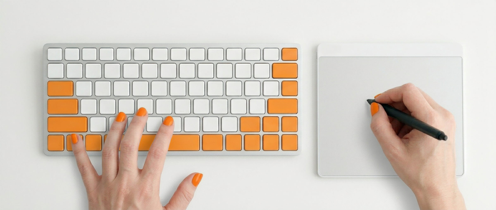

Keyboard Warriors · Foundations
This tab has a brief introduction to learning keyboard shortcuts for beginners. All information on this page is generic, not specific to the Keyboard Warriors game (that's the next tab!).
Originally written for a graphic design student audience, the principles discussed here remain true across a wide range of apps and skill sets.

Most guides tell you something like "they save seconds with every action, and over a year the time adds up to eight days. Now you'll get a holiday." That maths does add up, but personally, that's not particularly compelling, especially if it's going to take more time to memorise them in the first place. And it will. I don't think it's much about the time at all.
Every time you look away from your work to find a tool, your flow breaks. Every time you stop to hunt through a menu, you lose seconds of focus. Over a workday, those lost seconds don't just add up to wasted time, they hold you back from staying in the idea.
True digital fluency happens when the tool becomes an extension of your intent, rather than a barrier to it.
By moving commands from your brain to your hands, you free up your mind to focus entirely on what you're creating.
Professional creation is an ambidextrous act. One hand provides the precision of the pointer, the other executes the commands. When they work together, the interface disappears.
This module was built to help you shorten the distance between an idea and its execution, by building the muscle memory that lets you move at the speed of thought.
Important note for Windows users. I see you.
In the following pages you will see me using the ⌘ symbol a lot. Also known as the "Command" key (cmd for short), it's the most commonly used modifier key on the Mac keyboard. Obviously, you don't have that key, but you're probably accustomed to seeing shortcuts listed like "⌘/Ctrl + Z." That's because, for the vast majority of cases, the ⌘ key and the Ctrl key are interchangeable.
If they're ever not, I'll call it out, but so long as they remain in sync, I'm just showing the ⌘ version here. Not because I don't like you, just because having one simple symbol gives us focus and clarity.
The important thing is the changing part of the information. So get in the habit of thinking "⌘/Ctrl" whenever you see either ⌘ or Ctrl. That's good advice for all of us. Dogs and cats living together.
In a busy studio, time is your most precious resource. Keyboard shortcuts promise to help you work faster and without breaking your flow, but they can feel intimidating at first. The jargon can sound like a foreign language, and the multi-finger key combinations can feel a bit like practising guitar chords.
You can maximise your impact early on by focusing on the most frequent and standardised shortcuts first. You probably already know some, such as copy ⌘C, paste ⌘V, and undo ⌘Z. These work across almost every app you touch, so they save you from constantly digging through menus.
As shortcuts become second nature, they do more than just shave time off every process. You will also start to focus more on what you're doing, instead of how you're doing it.
| Action | Finder | InDesign | Illustrator | Photoshop | After Effects | Figma |
|---|---|---|---|---|---|---|
| New document | ⌘N | ⌘N | ⌘N | ⌘N | ⌘N | ⌘N |
| Open file | ⌘O | ⌘O | ⌘O | ⌘O | ⌘O | ⌘O |
| Select all | ⌘A | ⌘A | ⌘A | ⌘A | ⌘A | ⌘A |
| Duplicate | ⌘D | - | ⌘D | ⌘D | ⌘D | ⌘D |
| Undo | ⌘Z | ⌘Z | ⌘Z | ⌘Z | ⌘Z | ⌘Z |
| Save | - | ⌘S | ⌘S | ⌘S | ⌘S | ⌘S |
| Group | - | ⌘G | ⌘G | ⌘G | ⌘G | ⌘G |
| Toggle guides | - | ⌘; | ⌘; | ⌘; | ⌘; | ⌘; |
| ⬋ Selection tool | - | V | V | V | V | V |
| Hand tool | - | Space | Space | Space | Space | Space |
| Bring forward | - | ⌘] | ⌘] | ⌘] | - | ⌘] |
| Send backward | - | ⌘[ | ⌘[ | ⌘[ | - | ⌘[ |
| Action | File Explorer | InDesign | Illustrator | Photoshop | After Effects | Figma |
|---|---|---|---|---|---|---|
| New document | Ctrl N | Ctrl N | Ctrl N | Ctrl N | Ctrl N | Ctrl N |
| Open file | Ctrl O | Ctrl O | Ctrl O | Ctrl O | Ctrl O | Ctrl O |
| Select all | Ctrl A | Ctrl A | Ctrl A | Ctrl A | Ctrl A | Ctrl A |
| Duplicate | Ctrl D | - | Ctrl D | Ctrl D | Ctrl D | Ctrl D |
| Undo | Ctrl Z | Ctrl Z | Ctrl Z | Ctrl Z | Ctrl Z | Ctrl Z |
| Save | - | Ctrl S | Ctrl S | Ctrl S | Ctrl S | Ctrl S |
| Group | - | Ctrl G | Ctrl G | Ctrl G | Ctrl G | Ctrl G |
| Toggle guides | - | Ctrl ; | Ctrl ; | Ctrl ; | Ctrl ; | Ctrl ; |
| ⬋ Selection tool | - | V | V | V | V | V |
| Hand tool | - | Space | Space | Space | Space | Space |
| Bring forward | - | Ctrl ] | Ctrl ] | Ctrl ] | - | Ctrl ] |
| Send backward | - | Ctrl [ | Ctrl [ | Ctrl [ | - | Ctrl [ |
Learning the most conventional shortcuts first is smart, but here is where it can quietly trip you up. Even within families of apps like Microsoft or Adobe, the same keys can mean different things, depending on the app's core workflow. Let's walk through an example.
"Select All" is one of those very widely used conventions. ⌘A for "All" works in Photoshop, as it does in Microsoft Word, and elsewhere, but what about deselecting?
In Photoshop, "Deselect" is ⌘D. Seems obvious, right? It's clean, direct, and the D key sits just two across from A on the keyboard. Like our cut-copy-paste shortcuts, you can hold one finger on the modifier while another dances between the related options. What could be faster or more intuitive?
Now jump into Illustrator. "Select All" stays as ⌘A, but "Deselect All" moves to ⌘ + Shift + A. Did you see that one coming? Here, Adobe uses Shift as a modifier key. It flips the logic: A means "Select All," so Shift + A inverts the meaning to "Deselect All."
This is not a one-off. You will see this modifier pattern repeat across many actions in many apps.
You might like one of these better than the other, but whichever makes more sense to you, let's acknowledge that what we have here are two sensible conventions.
Pairs A and D directly.
Uses a modifier key, Shift, to invert the A key's action.
Both work well on their own terms, but now let's switch to a third app.
InDesign follows Illustrator's approach. "Deselect All" is ⌘ + Shift + A.
By now you should be a little annoyed that everything doesn't just work the same, and that's not a bad instinct. But let's dig a little deeper into why they'd be different.
Photoshop lives inside pixel selections, where turning them off is a constant, high-frequency need, so the highly efficient and intuitive ⌘D for "Deselect" gets pride of place.
Illustrator and InDesign work with objects on a canvas, where you can click any empty space and accomplish the equivalent action, even faster than the Photoshop user did. In this context, burying the rarely used "Deselect All" command a little deeper by using the modifier key frees a prime shortcut, ⌘D, for what proves to be a higher-frequency action in those apps (in this example it happens to be "Transform Again").
Once you see these competing conventions as different design mental models, not random quirks, your brain stops fighting them. As you learn the official shortcuts, you're also becoming fluent in these broader conventions.
Learning conventions is more powerful than just learning individual shortcuts, because you get better at predicting more shortcuts correctly, instead of relying entirely on memorisation. Plus, that memorisation itself becomes easier once you see how each one fits a familiar logical pattern.
Sometimes the obvious letter for a shortcut is already taken, so the app will use a pun to make it memorable. The eyedropper tool is an example of this. Don't press E, it's the I key.
Many Adobe apps have an ellipse tool selected with the L key. That's "L" for "EL-lipse."
Or maybe the associated icon or cursor is more synonymous with the tool than the official name is. The V key is used across many apps for the pointer, or selection, tool because it looks like an arrow.
Adobe uses the X key to swap the properties between the two swatches in the toolbar. Think of it as two arrows, up and down.
When keys clump into a small set on the standard keyboard layout, they can be useful both for conceptually grouping related tasks, and for efficiency in actual use. We saw that with copy and paste, but the [ and ] keys are another example. These "bookends" commonly get used for functions that move a setting down or up, smaller or bigger, and so on.
The < and > pair. The arrow keys. The number pad on extended keyboards. Any clump of four keys, or even nine, can become a "direction pad."
Similarly, right above that key pair is the - and = pair. Apps use this to mean minus and plus, even though, technically, the plus sign would be reached via Shift + =. The reason for this is efficiency, which is what shortcuts are all about after all. Being able to quickly zoom out and in by pressing ⌘- / ⌘= is easy to learn and very fast in practice. We don't want people having to add the shift key into one of those just because "the keyboard layout said so."
Most people never even stop to think they are actually zooming in with ⌘=, not ⌘+, at all.
If you have a full-size, or "extended," keyboard, you have a second set of dedicated single function - and + keys on the number pad. These also work with ⌘ to zoom out and in. In practice, few users actually do this, since it requires two hands.
By getting acquainted with these few conventions, what seemed arbitrary or meaningless actually starts making sense. Soon, as you switch contexts, both your fingers and mind will adapt faster. To get there, we just need to practise, which is exactly what Keyboard Warriors was built for.
Custom keyboard shortcuts are one of those topics that can divide a studio. Some designers swear by them and can't imagine working without their personalised "pro tweaks" to stay in flow. Others avoid them entirely, having been burned by a machine that behaved "wrong" at the worst possible moment. Both perspectives are valid, coming from real experience.
This final section is about helping you make intentional decisions. Custom shortcuts can absolutely make you faster, but they also introduce new problems, for yourself or your collaborators, if you don't handle them with care.
Most designers eventually notice a handful of actions that interrupt their rhythm. These are usually small things: a command buried deep in a menu, a specific tool you reach for constantly, a repetitive action that forces your primary hand away from your mouse or stylus.
Used well, custom shortcuts remove friction and help you stay focused on the work rather than the interface.
Adobe apps make a great case study here, because they all have excellent support for user customisations. But each one has its own flavour. Let's take a look at what's possible, and what to watch out for.
Yes, it's in the menu (Edit / Keyboard Shortcuts), but why not open the shortcut editor with its own shortcut:
⌘ ⌥ ⇧ K
Ctrl Alt Shift K
Note: exploring the Adobe shortcut editor as a discovery tool.
The shortcut editor isn't only for customising your setup. It's also one of the clearest ways to learn how Adobe thinks. Every menu, tool and command is grouped in a way that reveals the structure of the app. You can search, browse and notice patterns that aren't obvious from the interface alone.
You don't need to memorise anything here. Treat it as a quiet place to explore. It can show you shortcuts you didn't know existed, and help you understand why certain tools share similar keys. Think of it as a map of the app that rewards curiosity.
Photoshop offers a full shortcut editor with clear categories. Conflict warnings appear immediately. You can export and import shortcut sets. It's ideal for adding shortcuts to your high-frequency tasks.
Illustrator behaves similarly, but some tools share shortcut slots. You may need to free up a key by reassigning something else.
InDesign is very flexible and often used to support specific production workflows. It allows multiple shortcut sets for different roles, and is excellent for long document work where speed matters.
After Effects is highly customisable but more complex. Many commands are hidden deep in menus. It's well suited to timeline navigation, layer operations and animation tools.
These are the situations where custom shortcuts consistently help in real studio practice.
These are the problems that appear most often in shared studios and teaching environments.
Custom shortcuts work best when they remove friction without creating new problems.
A small number of thoughtful changes can support your workflow, and help you stay focused on the creative decisions that matter.